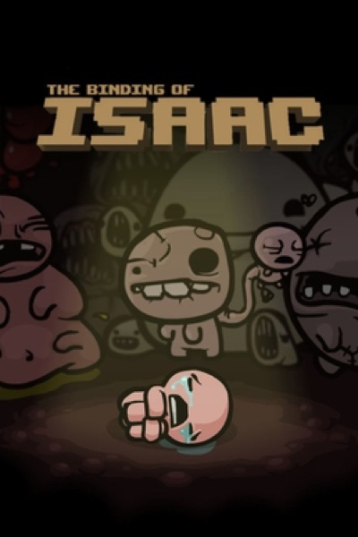

Roguelike · 2011
The Binding of Isaac
Randomised runs and grotesque item synergy; the roguelite boom starts here.

Cover: Wikipedia: The Binding of Isaac (video game)
Facts
- Released
- 2011-09-28
- Genre
- Roguelike
- Category
- Roguelike
- Platforms
- PC
- Developers
- Edmund McMillen
- Publishers
- Edmund McMillen, Florian Himsl
PC requirements
- Minimum
- [object Object]